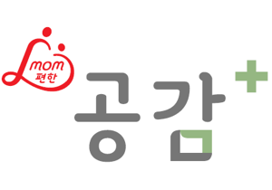
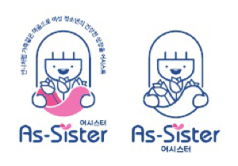

롯데캐피탈은 종합여신금융서비스를 바탕으로
고객과 이해관계자를 위한 '따뜻한 금융'을
제공하고자 노력합니다
사회공헌
아울러 사회공동체 테두리 안에서 지역사회문제를 함께 고민하고 해결하기 위해
사회적 책임을 준수하고 나눔 경영을 적극 실천하고 있습니다.
핵심타겟
지역사회
Community
지역사회 문제도출 및
이해관계자 협업을 통한
사회적 책임 준수
이해관계자 협업을 통한
사회적 책임 준수
여성·아동
Women·Children
롯데 CSR 시너지
엄마와 아이, 나아가
가족이 행복한 사회 만들기
엄마와 아이, 나아가
가족이 행복한 사회 만들기
금융
Finance
금융 본업(業)을
바탕으로 한
따뜻한 금융 제공
바탕으로 한
따뜻한 금융 제공
환경
Environment
환경과 생명을
지키고 지속 가능한
사회 만들기
지키고 지속 가능한
사회 만들기
주요브랜드
mom편한 공감+
공간에 공감을 더한 롯데캐피탈의 사회공헌 사업으로 <여성의 마음이 편해지는 공간>, <아동과 여성의 마음에 공감>의 뜻을 담고있습니다.

As-Sister : 어시스터
언니처럼 가족같은 마음으로 여성 청소년의 건강한 성장을 어시스트 하는 활동으로, 여성 청소년의 생리로 인한 경제적 부담을 줄이고 여성의 기본권과 건강권 보장을 위한 여성용품 지원 사업입니다.
